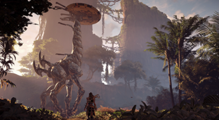

Viaja por un mundo lleno de extraños artefactos y decadentes ruinas...

Explora profundidades ocultas
Los Cuellilargos son majestuosas máquinas de patrullaje que pueden ser escaladas con un poco de
ayuda del entorno. Al escalar y sabotear a un Cuellilargo te revelará el área circundante del
mapa, incluyendo los lugares de máquinas. Además, activa una descarga que debilitará las máquinas
cercanas.
Los terrenos de caza son desafíos de arena con límite de tiempo que te exigen poner a prueba
diversas estrategias de combate contra diferentes tipos de máquinas.Consigue al menos tres marcas
de Soles, recompensas por completar las pruebas de un Terreno de caza, para obtener acceso a la
Logia de Cazadores de Meridian.
Los Campamentos de bandidos combatirás contra muchos enemigos humanos atrincherados.
Despejar estos campamentos permite que los colonizadores los ocupen, lo que agrega a un comerciante
y un valioso punto de viaje rápido.
Los Observatorios son restos geolocalizados del pasado antiguo que permanecen en áreas panorámicas.
Escanear con el Foco un Observatorio te dará una mirada al Mundo Antiguo y desbloquea un segmento de la
historia de su creador. Puedes leerlos en la pestaña Coleccionables del menú Libreta.
Los objetos Coleccionables incluyen flores de metal, figuras Banuk y vasijas antiguas.
Puedes llevar los conjuntos completos a mercaderes especializados en Meridian
(Kudiv, Cantarah y Palas el Estudioso) para recibir recompensas.
Los búnkeres contienen secretos del pasado antiguo, asegúrate de usar el Foco para buscar pistas y
otros objetos…